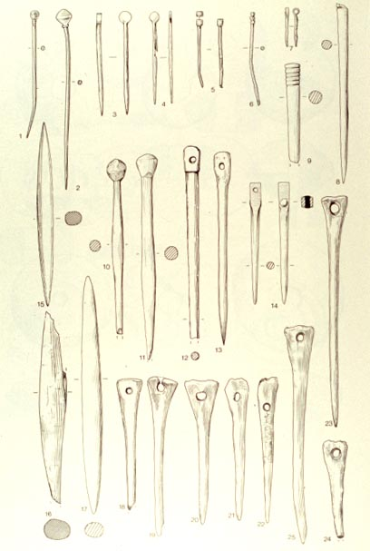

The animal remains
A large sample of animal bones can tell us about what kinds of animals were used by the villagers, butchery patterns, ages at death, and animal sizes. The animals included: cattle, sheep, goat, pig, horse, dog, cat, deer, hare, bear, badger, and beaver; for birds, they found domestic fowl, domestic geese, domestic ducks, and also wild birds including heron, swan, wild goose, duck, teal, goshawk, etc. There were remains of two freshwater fish: pike and perch, as well as bones from frog and toad, shrew, mole, and water vole. It seems that the most important animals were cattle, sheep, goats, and pigs. Sheep and goats (whose bones are often indistinguishable archaeologically) were the most numerous, but cattle, being larger, probably provided the most meat. Cattle bones made up about 35% of the total throughout the history of the site; however, as time went on, there was a decrease in pigs in favor of sheep/goats. Apparently the Anglo-Saxons killed one-half of their sheep before the age of one year, and nearly two-thirds were killed before the end of their second year. Only a few sheep (6%) lived beyond six years. This indicates that they were probably killed for their meat, with some kept to provide milk (and to reproduce). Only a small number of sheep were kept for their wool, probably for domestic uses. Incidentally, all kinds of animal bones were used to make tools. For example, pig fibulae (leg-bones) were used to make pins and needles, as to the right.
|
 |
Apparently, in addition to tending domesticated animals, the inhabitants occasionally hunted, especially for deer, and the in addition to meat, the deer antlers were used to make tools.
Plant remains
The excavators also found remains of plants, generally when it had been burned in a fire. Domesticated wheat (triticum), rye, and barley were found, with small amounts of oats which were probably not grown as a crop but gathered wild.